Design spec · v1.4 · 17 October 2026 · desktop · MONEY TALKS 2 demo build
daoshou/rewards.py. Milestones is a utility link in the sidebar foot with an "earned of total" count; the latest badge also sits on Overview. The nav stays at four./api/personal/overview and /ledger endpoints in-process, on C01's statements and the manual-entries fixture.docs/personal_api.md). The browser replaces account IDs with labels before upload; the server receives the statement rows with those labels, calculates in memory and keeps no copy; Ask Atlas gets your question as typed and computed totals, with accounts as fresh codes on every request; PRISM gets step and tool names, timings, token counts and status, never the question, answer, tool data or amounts. New privacy-center row: Exchange rates, the server fetches ECB rates only for a currency you have no rate file for, sending only currency codes and a date range.Upwork · acct ••7426.Upwork · acct ••7426 since v1.3.1); PRISM traces in this mode are content-free (tool names, timings, pass or fail). Delete all my data clears the browser; Export backup downloads one JSON file.daoshou/ledger.py; eleven new components (§4); icons 25 → 30 (shield, lock, trash, server, monitor).GET /api/forms: $14,356.59 on forms vs $11,956.06 landed (gap $2,400.53); possible duplicate = Fiverr (paid out to PayPal); no 1099-K platform over the real $20,000 AND 200-transaction threshold; form types are simulated and labelled.--sa-* tokens, including the logo, so the palette can be swapped in the token file alone.The first complete visual language for Side Atlas, the ledger for global side income with a tax layer on top. Everything here — tokens, components, every desktop screen — is decided at once, in one version. The clickable prototype is 07-mockups/app.html; the screen images in 08-screens/desktop are exported from it with real numbers from the fictional test set.
Reference. Linktree, for form: big rounded cards, pill buttons, heavy rounded headline type, one bold colour field per screen. Not for colour. Side Atlas has its own palette built around a deep forest green (the user's choice).
| Principle | Rules |
|---|---|
| One bold field per screen | Exactly one .sa-hero, always forest. Everything else is white, sage or a light tint. |
| Money is calm | Money figures are ink or forest on white/sage, tabular, right-aligned in tables. A deduction may use its semantic text colour. The only figure on a colour field is the hero figure: white, ≥48px, on forest. |
| Lime is a shape, not a text colour | Lime only for large shapes, bars, dots and the countdown numeral (≥48px). Never small text on lime; never small lime text. |
| Fees and tax never share a colour | Platform fee = clay, payout fee = stone, FX = slate, tax withheld = tax blue, net = forest. |
| Stop, don't guess | Missing data shows a light warning card beside the forest hero, names the record and offers one action. Totals that skip a record are marked incomplete and say what they leave out. |
| Pills and big radii | Buttons, chips and segmented controls are full pills. Cards 24px, inner panels 16px, inputs 14px, badges 8px. |
The mark is a globe — one meridian, one parallel — in lime on a forest rounded square (radius 18/64). The lockup sets "Side Atlas" in Plus Jakarta Sans 800 (v1.2: no Chinese name; the mark is now the pigeon-head app icon, see the decision log). Don't recolour the mark, don't put the lockup on lime, don't use the wordmark without the mark under 120px wide.
| Style | Spec | Use |
|---|---|---|
| $5,341.79 | 800 · 56/56 · −0.03em | Hero figure |
| Tax items | 800 · 32/37 · −0.02em | Page title |
| Where the gross went | 800 · 22/28 | Card title |
| Tax already withheld | 700 · 17/23 | Sub-heading |
| Body text | 500 · 15/22 | Paragraphs, nav |
| Small text | 500 · 13/19 | Notes, meta |
| Label | 700 · 12 · uppercase · +0.06em | Card labels, table heads |
All buttons are full pills, 44px (small 34px). Pressed: sinks 1px and darkens to forest-700. On a colour field use white with the field's colour as text, or a white outline.
Card 24 · inner panel 16 · input 14 · badge 8 · button, chip, segmented control: pill. Shadows: cards almost flat (0 1px 2px), floating sheets 0 12px 32px at 10%.
Platform colours appear only as dots, chips and the share-of-net bar. Deduction colours appear only in waterfalls, gap bars and deduction columns. The two sets never meet in one chart.
| Part | Spec |
|---|---|
| Hero field | .sa-hero forest, radius 24, padding 30/32, min-height 236. Lead 16/600 in on-forest-mid, figure 56/800 white, sub 14/500. Lime orb bottom-right, clipped, never behind text. One per screen. |
| KPI card | White card, label (icon 16 + uppercase label), figure 34/800 (ink or forest), note 13 text-mid, optional delta pill (ok tint / warn tint). |
| Waterfall bar | 22px pill track (sage), segments with 2px gaps: net forest, platform fee clay, payout stone, tax withheld tax blue. Legend rows: 12px swatch · label · amount (tabular, right) · % of gross. Net row bold forest. |
| Platform chip | Pill 32px, white, 1px strong line, 9px platform dot, 13/600. Selected: forest-100 fill, forest border and text. |
| Ledger row | Dense table, 13px, 10/11 padding, hairlines. Date MM/DD · platform dot + name · type with ref below in mono · original amount; non-USD shows ÷ 7.1800 · 2026-09-03 (rate and its date) in slate mono below · gross · fee (clay) · payout (stone) · withheld (tax blue, bold) · net (forest, bold). Zero shows an em dash in line-strong. |
| Tax item card | White card; country badge in tax tint; amount 28/800 tax-text, native currency below; sage info note under it. |
| Form vs bank row | Platform · form badge (sage; "No US form" in tax tint for Bilibili) · paid out to (PayPal bold) · form view (gross) · bank view (landed, forest bold) · 120px gap bar (clay/stone/tax/line for refunds) + gap amount · transactions · status: below 1099-K threshold / 1099-MISC likely / projected (sage), possible duplicate (warn), CN tax record (tax). Total row for platforms with US forms. Above the table: sage threshold banner; below: simulated-forms note, duplicate (warn) and contrast (sage) notes. |
| Missing-data warning card (v1.1) | .sa-warncard: warn-tint fill, 1px hairline, 4px maroon left rule, radius 24. "Calculation stopped" label (12/700 uppercase, maroon, alert icon), title 21/800 ink, body 14.5 text-mid, white key–value panel (platform, reference, amount, date, rate = missing), primary "Add the rate" + secondary "Open record", PRISM chip. The hero stays forest and shows the partial total with an "Incomplete" glass chip. |
| Source card (v1.1) | .sa-src white card radius 24, platform dot + name 16/800, status badge (ok "Connected" / sage "Not connected", dashed border), file name mono, detected format 12.5 meta, footer: records · date range · payout target. |
| Upload zone (v1.1) | .sa-drop: sage fill, 2px dashed line-strong border, radius 24, white icon tile, h2, one sentence, primary "Choose CSV files". |
| Rate control (v1.1) | Number input (radius 14), preset segmented pills 15–35%, range slider (accent forest), sage note "you choose; Side Atlas doesn't suggest a rate". Preview updates the hero figure live. Platform include/exclude: .sa-toggle pill switch, forest when on. |
| Agent step timeline | Numbered 32px nodes on a 2px rail; tool name mono 13.5/700 · args in meta; one-line result below; check icon at right. Final step filled forest. Answer figures carry step references (.sa-ref). |
| Data switch (v1.3) | .sa-mode: two-option pill switch under the logo, sage track, selected option white with forest text and a card shadow. "Your data" carries the lock icon. Switching changes every screen's data; the four nav items stay. |
| Utility links (v1.3) | .sa-util in the sidebar foot above the tagline: My data (with a file count once imported) and Settings & privacy. 36px pills, 14/600, selected forest-100. They are not nav items. |
| Upload hero (v1.3) | .sa-hero.drop: the screen's one hero doubles as the drop zone, with a 2px dashed inner rule (on-forest ghost line) inset 12px. Title 34/800, one sentence, white "Choose CSV files" and an outline "Explore demo data", one hint line. Atlas waves bottom-right with one speech bubble (.sa-speech, empty states only). |
| Privacy promise strip (v1.3) | .sa-promise: one white card split in three (browser · server · AI), 40px forest-100 icon tile, a short sentence 14/700 and one meta line. Same words wherever it appears. |
| Where-to-download grid (v1.3) | .sa-where: 4 × 2 inner panels; platform dot + name 14/800, menu path 12.5 text-mid, file name in mono meta. "Paths may change" in the card head. |
| Upload list (v1.3) | .sa-table.sa-files: platform dot + name + pseudonymised account (acct ••NNNN, four digits since v1.3.1, mono meta; the real ID is never shown) · file (mono) · rows · dates ("Jul 1 to Sep 30") · currency · issues (ok "None" / warn "N need a rate") · Remove (.sa-linkbtn with trash icon, warn tint on hover). A file that was not read is a warn-tint row with the reason. |
| Settings sheet (v1.3) | .sa-settings: rows of label (icon 16 + 16/800) and control on one line, help text 13 text-mid below, hairline between rows. Controls are segmented pills and the rate input. |
| Currency switch (v1.3) | .sa-seg.cur: segmented pill with a glyph per option ($ USD · ¥ CNY), sits left of the period switch on Overview. Changes display only; the ledger keeps each record in its own currency. |
| Privacy center map (v1.3) | .sa-datamap on the hero: one glass row per destination (This browser · Side Atlas server · Ask Atlas · PRISM traces), 36px icon tile, name 14/700, what it holds 13 on-forest-mid. |
| Danger button (v1.3) | .sa-btn.danger: white pill, warn text, warn line; hover warn tint. Delete actions only; never filled. Delete asks once, offers "Export backup" first, then clears this browser. |
| Grouped table rows (v1.3) | tr.group: page-colour band, uppercase label, one badge (tax "Withheld at withdrawal" / warn "No Chinese tax withheld"). Zero withholding shows ¥0.00 in line-strong. |
| Empty-state card (v1.3.1) | .sa-emptycard: white card, Atlas thinking at the inline mascot size, title 18/800 "Upload your first statement", one sentence for the screen, primary small "Go to My data". One per screen in Your data mode before any import; no hero, no skeletons. The four sentences are below. |
| Two-countdown hero (v1.3.1) | .sa-counts on the Tax hero when the tax home is Both: each countdown has an uppercase country tag, the 72px day count in the accent, two lines of label and a glass date chip; a glass hairline divides them. The set-aside figure stays on the left. |
| Facts row (v1.3.1) | .sa-facts: one country section as four label / value / note cells in an inner panel; the section head carries a country badge (US sim, China tax) and one secondary link. |
| Rate line (v1.3.1) | .sa-table td .rate under every converted amount, slate mono 11.5, source in the body font, bold. No rate file: × 6.7206 · Aug 21 · ECB reference rate, and on a weekend or holiday × 6.7206 · ECB rate of Fri Aug 21. With your rate file: × 7.1641 · Aug 21 · Your rate file. A date your file lacks: warn-tint row, warn badge "rate missing", the line Your rate file has no rate for this date, money cells "left out of totals", KPI net "incomplete" and a stop card above the table naming the record. |
| Confirmation dialog (v1.3.1) | .sa-dialog over a scrim, 580px, radius 24: warn icon tile, title 24/800, one paragraph, a list of what goes (statements, records, settings), then filled danger "Delete all my data", secondary "Export backup first", ghost "Cancel" on the right. Used for delete only. |
| Filled danger button (v1.3.1) | .sa-btn.danger.solid: warn fill, white text. Only as the confirm action inside the dialog; everywhere else the danger button stays white. |
| Entry sheet (v1.4) | .sa-drawer from the right, 480px on the page colour: title, one sentence, Close. A full-width .sa-seg.wide Income | Expense toggle, then date and currency side by side, a 60px amount field with the currency sign, then Source (income: free text plus chips of your sources and "New source") or Category (expense: seven chips, one picked), and an optional note with a lock line saying notes stay in this browser. Primary "Add income" / "Add expense", ghost Cancel. The goal sheet uses the same frame. |
| Form field (v1.4) | .sa-field: 11px uppercase label, 48px control (radius 14, 1.5px strong line; focus forest with a forest-100 ring), help line in meta. Big variant 60px / 26px 800 for amounts; area variant 76px for notes. |
| Filter chips with counts (v1.4) | Existing .sa-chip with a .n count: All · Income (up icon) · Expenses (down icon); one is on. Beside them, the "Added by you" tag with how many entries this month. |
| "Added by you" and dots (v1.4) | .sa-you: pink-100 badge, accent text, pencil icon. Platform dots stay filled in the platform colour; your own sources are hollow accent rings (.sa-pdot.own) and striped in share bars; expenses are dark squares (.sa-pdot.exp). Expense rows sit on the page colour and their amount is ink; expenses never use the fee, payout or tax colours. |
| Expenses by category + kept sum (v1.4) | .sa-catbars: one row per category with its amount and a 6px one-colour bar scaled to the largest. Under it .sa-kept: Net income, Your expenses, and Kept after expenses in forest, then one meta line explaining it. |
| Goal card (v1.4) | .sa-goal, three states: in progress (target icon, month, % badge, income "of $6,000", 12px progress bar, "You have {left} left…", Change goal); ended short (same, "You ended {left} short…"); reached (.reached: pink-100 card, reached date in the label, title, body, full bar, "You're {over} above…", Atlas celebrating at card size). Goal progress counts net income before your expenses. |
| Badge tile (v1.4) | .sa-badgetile: 96px pink-100 art panel with an Atlas pose, title 15.5/800, one-line description, then the reason in numbers and the earned date. Locked: sage panel, greyscale art at 45%, lock chip top right, "what's left" with a 6px progress bar. The latest earned tile has a 2px forest border. |
| Milestones grid (v1.4) | .sa-badgegrid: 4 columns, 16px gap, under a compact hero with "N of 8 earned", the latest badge and its pose at hero size. |
| Latest badge row (v1.4) | .sa-latest on Overview: pose at inline size, label with date, badge title, reason, "All" link to Milestones. |
| Sidebar / nav | 248px white, hairline right. Lockup at top. Nav items 44px pills, icon 20 + 15/600; active forest fill white text; hover sage. Footer: tagline (forest 14/700), PRISM chip, disclaimer. |
Screens 01 to 08 are the v1.1 drawings re-captured with the v1.3 shell in v1.3.1; for the v1.2 changes on those screens the built product (web/_checks/) is the reference.
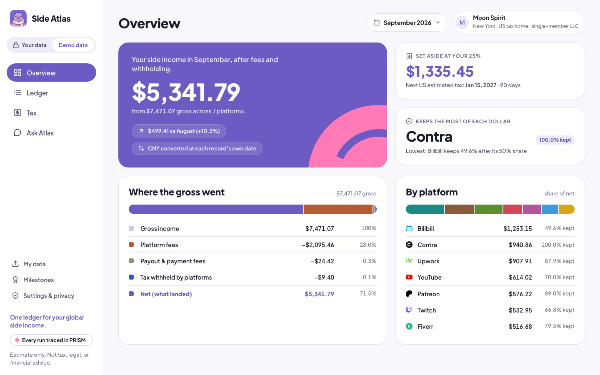
01 Overview. September net as the hero, set-aside and best keep-rate beside it; where the gross went; net by platform.
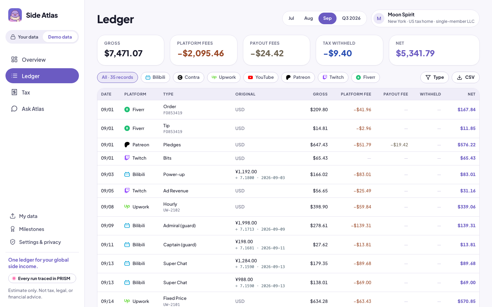
02 Ledger. Every record, with its own exchange rate and date; fees, payout fees and tax withheld in separate columns.
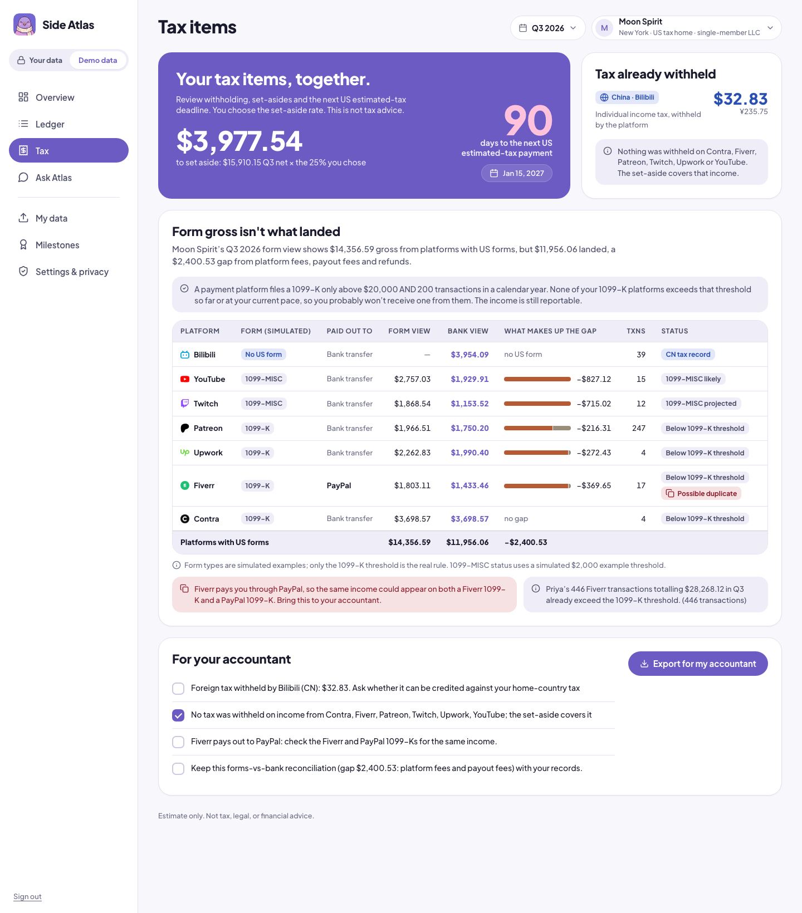
03 Tax items (hero). Set-aside at her own 25%, countdown to the next US estimated-tax date, tax withheld by country, form view vs bank view per platform with real numbers (Fiverr flagged as a possible PayPal double report; no 1099-K expected, income still reportable), accountant checklist and export.
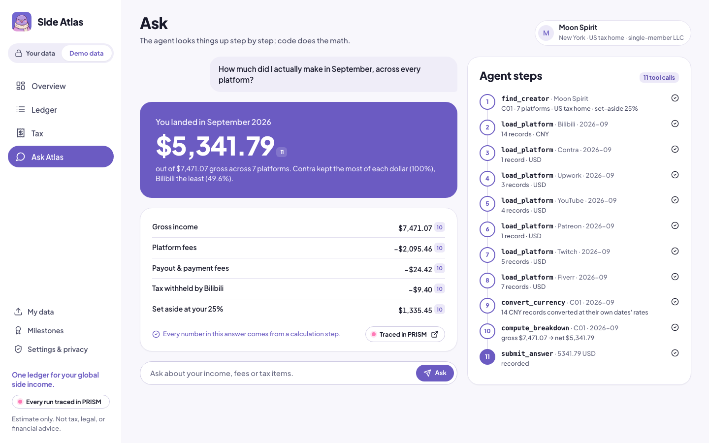
04 Ask. The answer with every figure tied to a step, the agent's 11 tool calls, traced in PRISM.
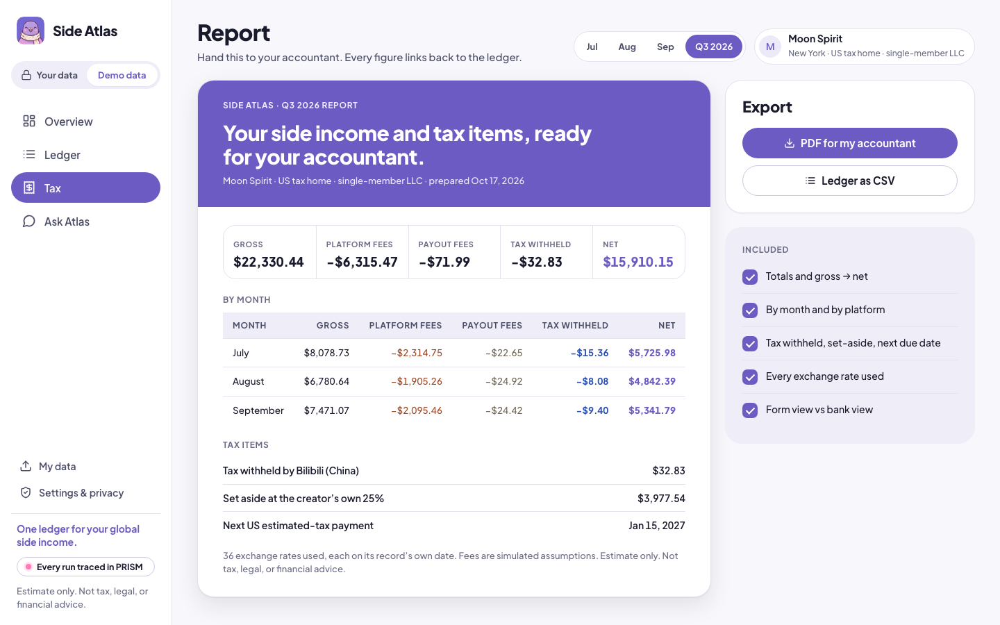
05 Report. The quarter on one sheet for the accountant; export as PDF or CSV.
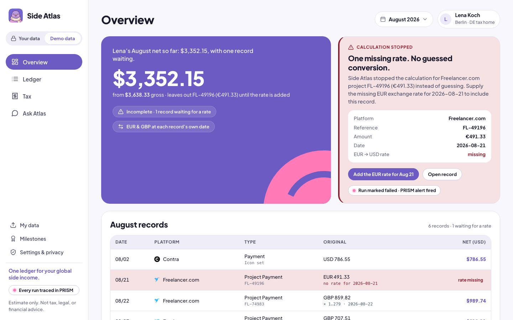
06 Missing data. Lena Koch, August: the forest hero shows the partial net marked incomplete; a light warning card names the record (FL-49196, €491.33, no EUR rate for 2026-08-21) and asks for the rate. Nothing is estimated.
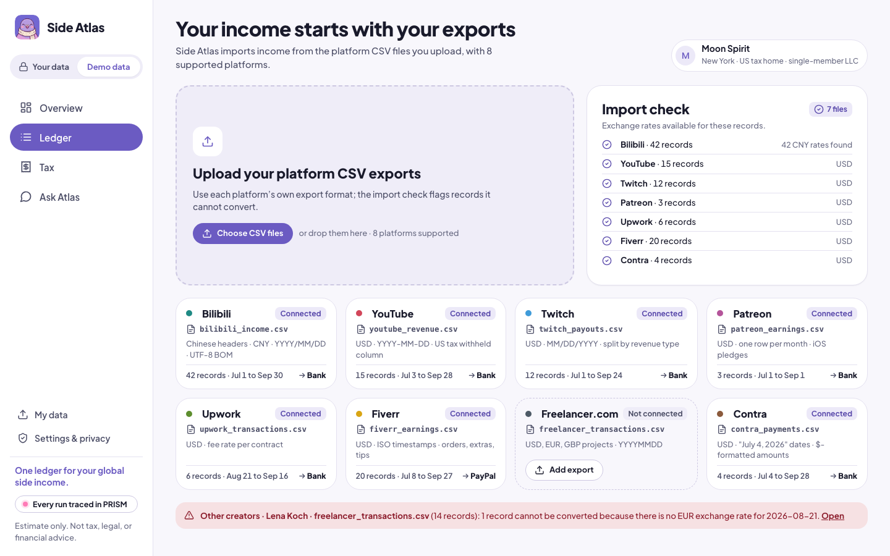
07 Sources. Upload zone, import check per file (Bilibili: 42 CNY rates found), the 8 platforms as cards with file, detected format, records, date range and payout target; Freelancer.com not connected; Lena's file flagged for the missing EUR rate.
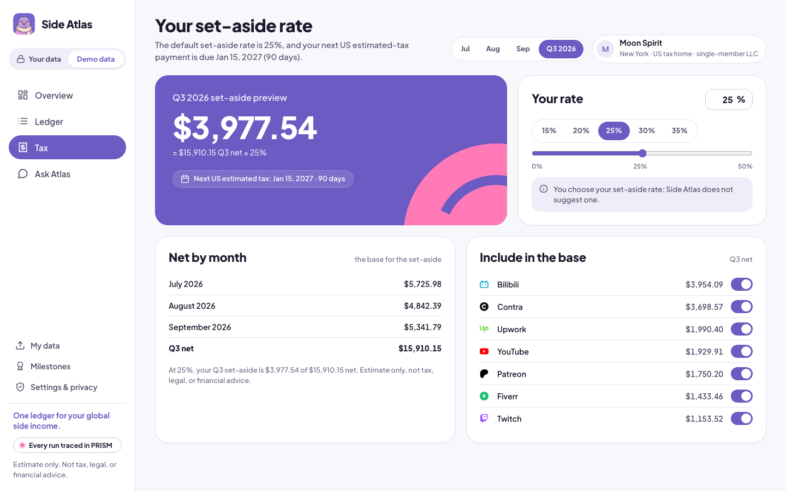
08 Set-aside. She chooses the rate (presets, slider or number); the Q3 preview ($15,910.15 × 25% = $3,977.54) and next due date update live; platforms can be left out of the base.
v1.3 · Your data. The person is "You": no name and no account. These screens reuse creator C01's exports as if uploaded, so every figure comes from daoshou/ledger.py (07-mockups/gen_data_v13.py → data-v13.js). The statement.pdf row on screen 11 is an illustrative state.
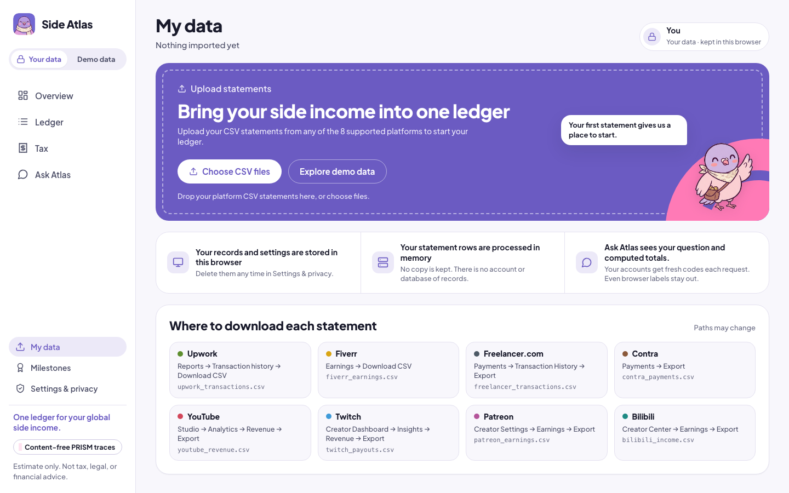
10 My data, empty. The hero is the drop zone: headline, one sentence, Choose CSV files or Explore demo data; Atlas waves with one line. Under it the privacy promise strip, then where each of the 8 platforms keeps its CSV export.
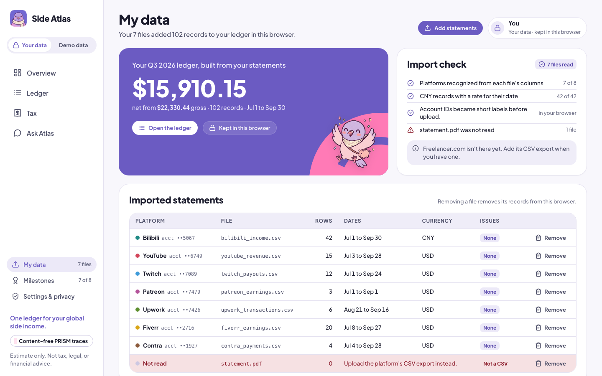
11 My data, after import. 7 files, 102 records: the hero shows the Q3 ledger they built ($15,910.15 net from $22,330.44 gross, Jul 1 to Sep 30) with Open the ledger; the import check (7 of 8 platforms, 42 of 42 CNY records with a rate, account IDs replaced in the browser, one PDF not read); one row per statement with its pseudonymised account, rows, dates, currency, issues and Remove.
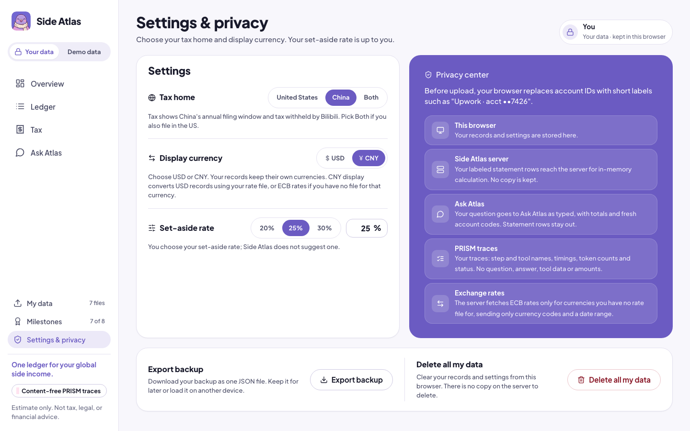
12 Settings & privacy (v1.3.1: five privacy-center rows written against the build, the last one for exchange rates; display-currency help follows the rate rule). Tax home (US / China / Both), display currency (USD / CNY), set-aside rate (the person's own). The privacy center hero says where each kind of data goes; Export backup and Delete all my data (danger button) sit below.
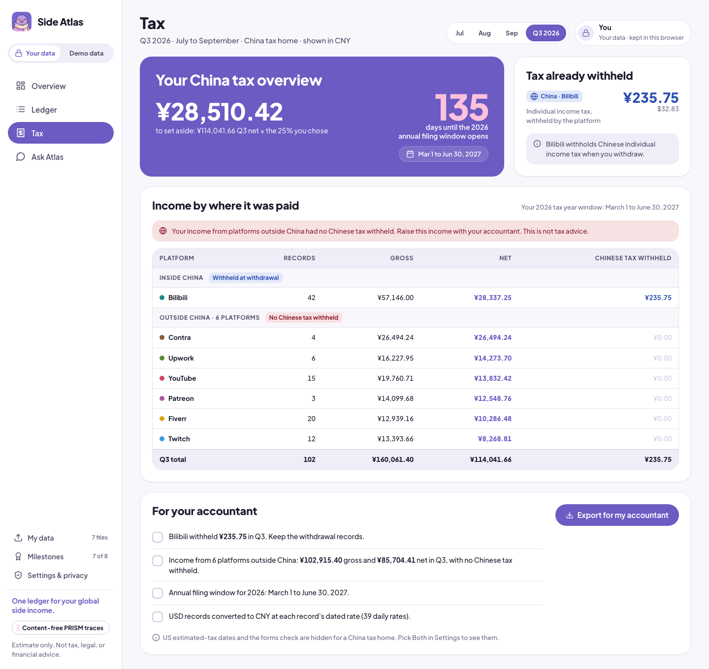
13 Tax, China tax home (full length). In CNY: ¥28,510.42 to set aside (¥114,041.66 Q3 net × the 25% you chose), 135 days until the 2026 annual filing window opens (Mar 1 to Jun 30, 2027), ¥235.75 withheld by Bilibili ($32.83), income grouped inside / outside China with the flag for ¥102,915.40 gross that had no Chinese tax withheld, and the accountant checklist. US estimated-tax dates and the forms check are hidden for this tax home.
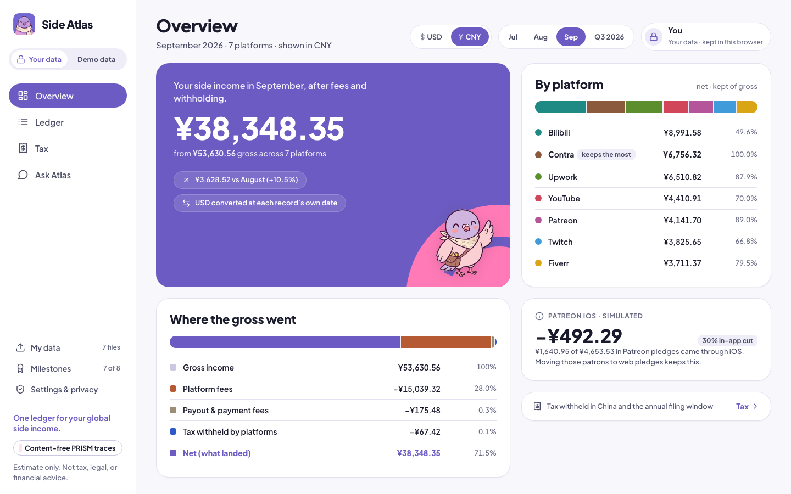
14 Overview in CNY (CNY rates from your rate file, the demo table with one rate per day). The v1.2 Overview with the currency switch on CNY: ¥38,348.35 net from ¥53,630.56 gross, +¥3,628.52 (+10.5%) vs August, USD converted at each record's own date; by platform, where the gross went and the Patreon iOS card in CNY. Totals are summed unrounded and rounded once, so platform rows can differ from a total by a cent.
v1.3.1
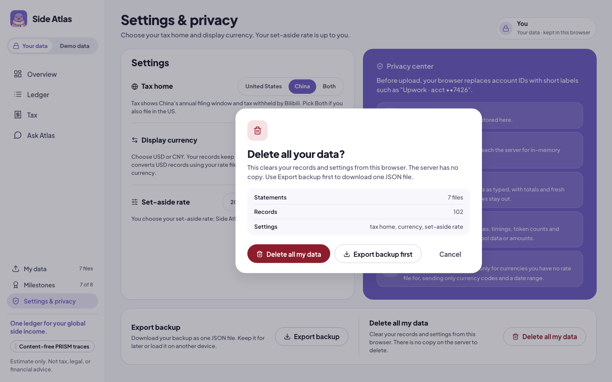
12b Delete all, confirmation. Over Settings & privacy: what goes (7 files, 102 records, settings), filled danger "Delete all my data", "Export backup first", "Cancel".
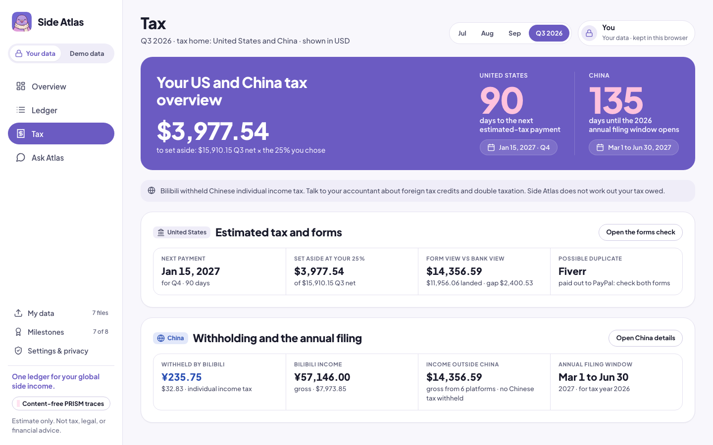
15 Tax, tax home Both (shown in USD). Hero: $3,977.54 to set aside, 90 days to the US estimated-tax payment of Jan 15, 2027 (Q4) and 135 days until China's 2026 filing window opens. An information flag sends foreign tax credits and double taxation to the accountant and states no tax owed. United States section (next payment, set-aside, form view $14,356.59 vs $11,956.06 landed, Fiverr possible duplicate) above the China section (¥235.75 withheld by Bilibili, ¥57,146.00 Bilibili gross, $14,356.59 gross outside China with no Chinese tax withheld, the filing window).
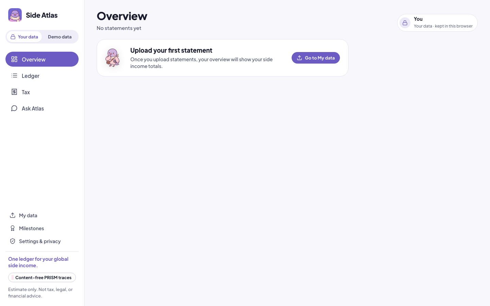
16 Overview before any import. Your data mode with nothing uploaded: one empty-state card that links to My data. Ledger, Tax and Ask Atlas show the same card with their own sentence (§4).
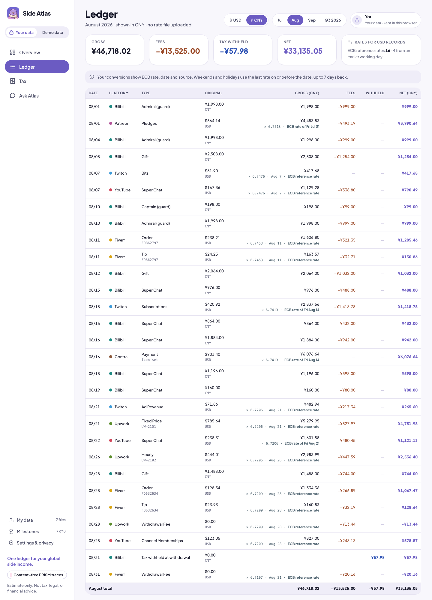
17 Ledger in CNY, August, no rate file (full length). Every converted USD record shows its ECB rate, the rate's date and the source; Patreon Aug 1 uses the ECB rate of Fri Jul 31, Twitch Aug 15 and Contra Aug 16 that of Fri Aug 14, YouTube Aug 22 that of Fri Aug 21; Bilibili records stay in CNY. ¥33,135.05 net from ¥46,718.02 gross, complete. All numbers are the real POST /api/personal/ledger response for these fictional statements, with real ECB reference rates (07-mockups/gen_ledger_v131.py).
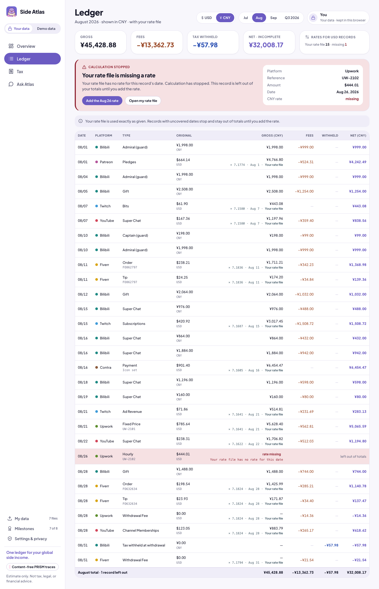
17b Ledger in CNY, August, with your rate file (full length). The demo CNY rate table uploaded as the user's rate file, with Aug 26 removed to show the stop: every converted record shows "Your rate file"; Upwork UW-2102 ($444.01, Wed Aug 26) has no rate, so the stop card names it, the row is left out and totals read incomplete (¥32,008.17 net). Also the real backend response.
v1.4 · all side income. The person is "You". Statements are C01's, with the demo rate tables uploaded as the rate files; manual income and expenses are C01's fixture (daoshou_testdata/data/manual_entries.json); every number comes from POST /api/personal/overview and /ledger in-process with the entries and the $6,000 goal in the body (07-mockups/gen_data_v14.py).
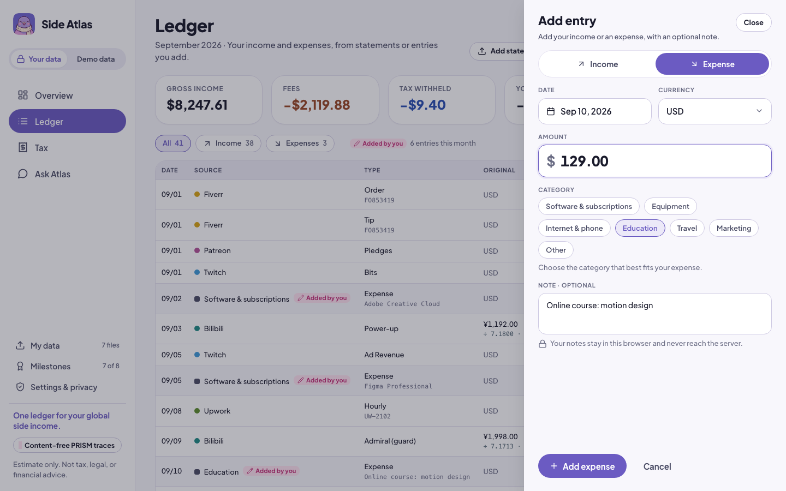
18 Add entry, expense (over the Ledger). Sep 10, $129.00, Education picked from the seven categories, the note "Online course: motion design" with the lock line.
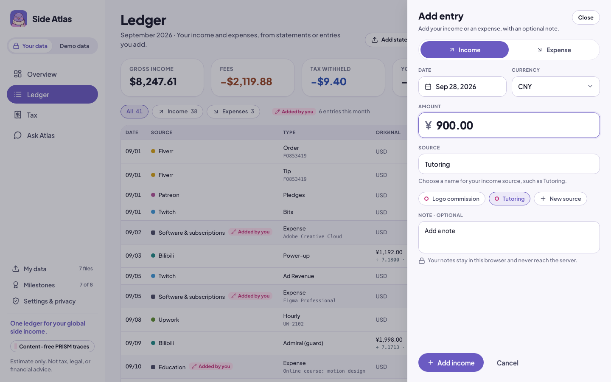
18b Add entry, income. Sep 28, ¥900.00 CNY, source Tutoring (chips for your sources and "New source").
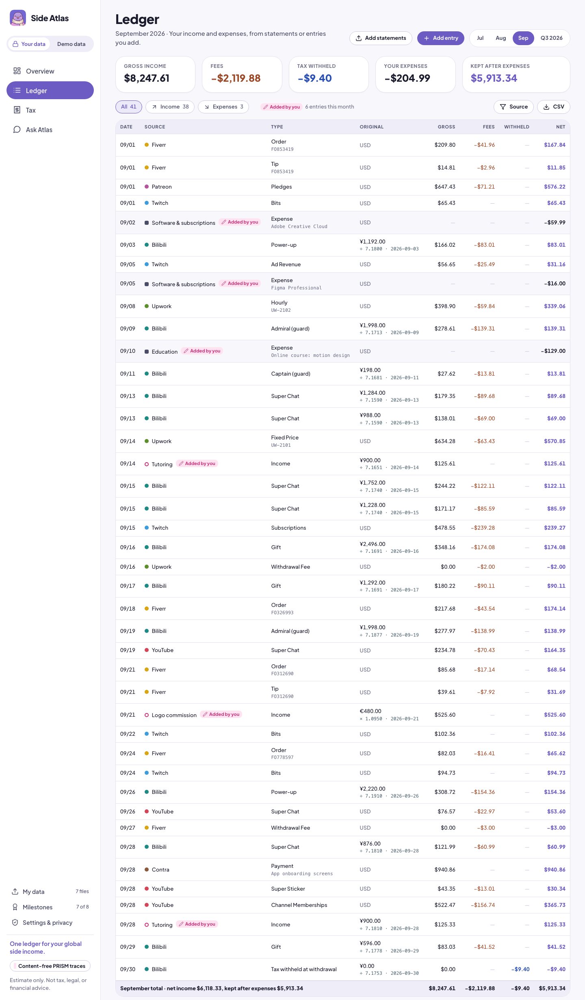
19 Ledger v1.4, September (full length). 41 rows: 35 platform records, 3 entries of your income (Tutoring, Logo commission, each converted at its own date's rate from your rate files) and 3 expenses. KPIs: $8,247.61 gross, −$2,119.88 fees, −$9.40 withheld, −$204.99 your expenses, $5,913.34 kept after expenses. "Add entry" sits beside "Add statements".
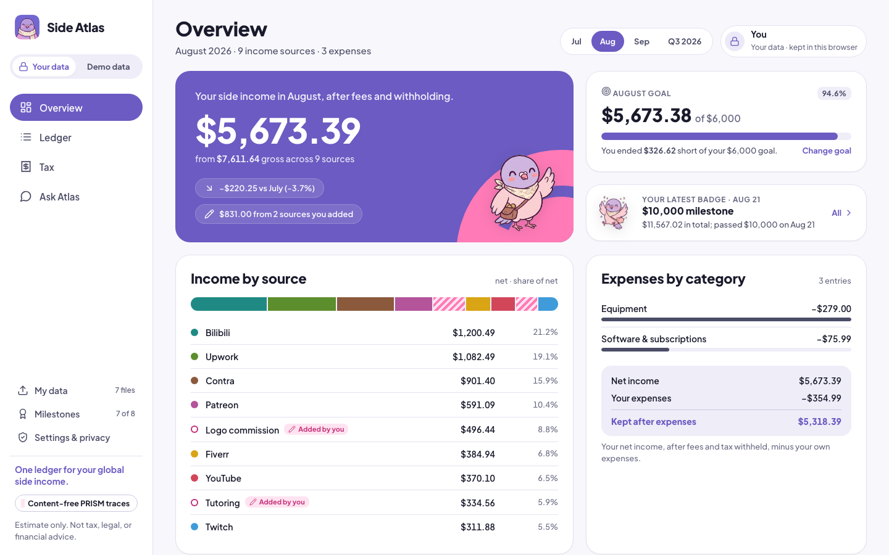
20 Overview v1.4, August. Hero $5,673.39 net from $7,611.64 gross across 9 sources (−$220.25 vs July, $831.00 from the 2 sources you added). The goal ended short: $5,673.38 of $6,000, $326.62 short (the goal sums unrounded values, the hero adds rounded parts: one cent apart, an open question). Latest badge as of August: $10,000 milestone (Aug 21). Income by source with your sources striped and tagged; expenses by category; kept after expenses $5,318.39. August is shown because only September reached the fixture's $6,000 goal (22b).
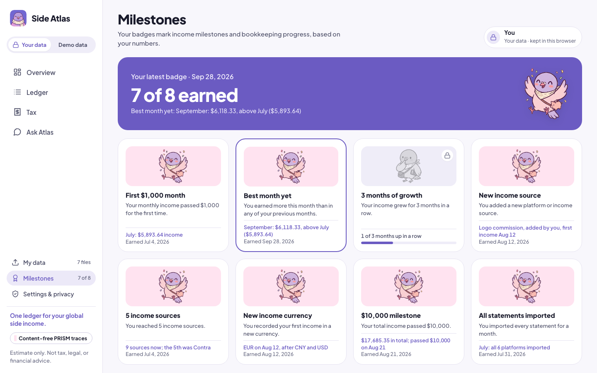
21 Milestones. 7 of 8 earned as of September; the latest is Best month yet (Sep 28: $6,118.33, above July's $5,893.64). 3 months of growth is locked at 1 of 3. Every reason and date comes from the endpoint's badges[].
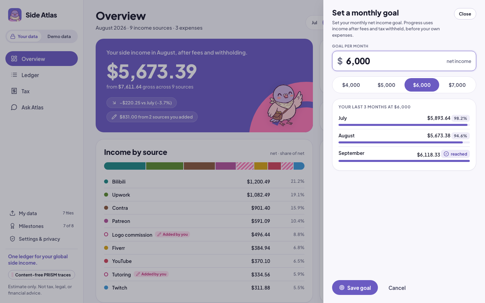
22 Set a monthly goal (over Overview, August). $6,000 with presets, and your last three months at that amount: July 98.2%, August 94.6%, September reached.
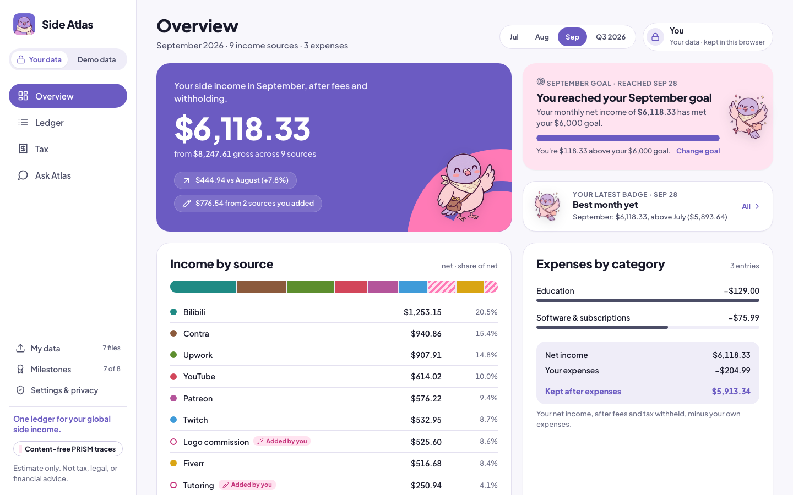
22b Goal reached, September. $6,118.33 against $6,000, reached Sep 28, $118.33 above; the goal card turns pink-100 with Atlas celebrating. Latest badge: Best month yet.
09 Ask in Chinese, deferred. The UI is single-language (English for the demo); a language switch is deferred, so the Chinese Ask screen is out of the prototype.
Out of scope for v1 (desktop demo). Layouts must not break below 1280px; a phone layout is a later version.
Two levels only. Stop (light warning card + nav count badge; v1.1): missing exchange rate or any input the math needs; the run is marked failed in PRISM and the alert fires. Note (sage or warn-tint inline note): threshold and duplicate-report information, import results. No toasts.
| ID | Need | Status | What remains |
|---|---|---|---|
| F1 | Multi-platform import (8 formats) | Covered | v1.1 Sources screen: upload zone, per-file import check, 8 platform cards. |
| F2 | Currency unified, rate + date traceable per record | Covered | — |
| F3 | Deduction breakdown, withholding on its own line | Covered | FX loss vs mid-market not modelled (rates are the conversion rates). |
| F4 | Dashboard: net, share, best keep-rate, MoM | Covered | — |
| F5 | Set-aside at the user's own rate + quarterly reminder | Covered | v1.1 Set-aside screen with presets, slider and number input. |
| F6 | AI Q&A, every number from a calculation step | Covered | v1.1 Chinese Ask screen (real v2 steps). |
| F7 | Monthly / quarterly report | Covered | PDF export styling = print of the sheet. |
| R1 | Tax form ≠ what landed (1099-K gross, double reporting, no form below threshold) | Covered | Real form_check numbers; form types simulated, 1099-K threshold real. |
| R2 | Opaque, undocumented platform fees | Covered | Per-record fee column; Fiverr tip fees visible. |
| R3 | No tax set aside, quarterly deadlines | Covered | — |
| R4 | Hidden withdrawal + FX cost | Partial | Payout fees shown; FX spread vs mid-market needs source data. |
| R5 | Spreadsheets stitched by hand | Covered | — |
| F8 | Your own data: upload statements only (v1.3) | Designed | Screens 10 and 11; build browser parsing and storage. |
| F9 | Privacy: browser storage, stateless server, aggregates to the AI, content-free traces (v1.3) | Designed | Screen 12; build delete, export backup, pseudonymised labels, PRISM content-free mode. |
| F10 | China tax home and CNY display (v1.3) | Designed | Screens 13 and 14; no Chinese tax is calculated. |
| F11 | All side income: your own income entries and expenses (v1.4) | Designed | Screens 18, 19, 20; build entry storage in the browser and the endpoints. |
| F12 | Rewards: monthly goal and milestone badges (v1.4) | Designed | Screens 20, 21, 22; endpoints exist (goal, badges[] on overview and report). |
| R6 | Cross-border reporting (DAC7, 1042-S, which FX rate) | Needs source | Only CN withholding and per-date rates shown. |
Import the drop-in, then build components from the reference styles:
@import "05-css/side-atlas-align.css"; (fonts + tokens + base) · component classes from 05-css/side-atlas-ui-reference.css · tokens also as 04-tokens/side-atlas-tokens.json (W3C, Tokens Studio → Figma) and .js. Icons: include 03-icons/side-atlas-icons.js, then <svg class="sa-icon"><use href="#sa-i-tax"/></svg>.
.sa-hero = 1).font-variant-numeric: tabular-nums) and money columns are right-aligned.--sa-* tokens (no hex in markup or component CSS beyond the token file).acct ••NNNN.